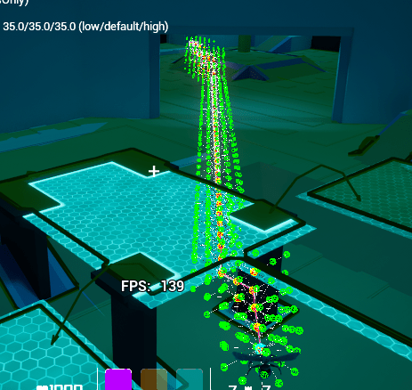
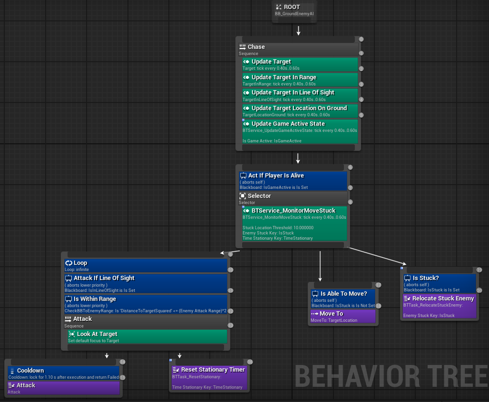
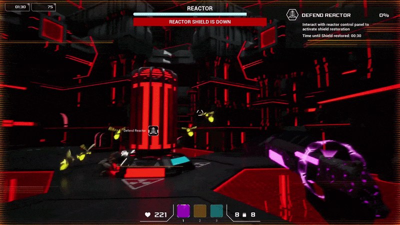

Game Overview
Escape Sequence is an intense sci-fi wave defense shooter developed in Unreal Engine 5. Players defend high-value objectives (such as power generators and reactors) and fight to survive against alien bug swarms trying to dismantle the facility.
As the lead systems and AI programmer, I architected the complete enemy lifecycle, from modifying and integrating an asynchronous 3D volumetric pathfinding plugin for flying enemies and dynamic ballistic jump trajectories for ground swarms, to Gameplay Ability System (GAS) combat, DataAsset-driven spawning pipelines, and Unreal Engine Subsystem architecture.
Core Technical Architecture
1. Async Multi-Threaded 3D Volumetric Pathfinding Plugin Integration
Flying enemies required full 3D spatial mobility without being restricted by standard 2D Recast NavMeshes. I integrated an open-source UE4 3D volumetric navigation plugin and extensively modified it for Unreal Engine 5, resolving compatibility breaking changes and re-engineering its synchronous architecture into an asynchronous worker-thread pipeline:
-
Off-Thread A* Execution: Rebuilt the pathfinder to
calculate routes inside a lightweight lambda on a background thread
pool via
ExecutePathfindingOnThread(), completely eliminating Game Thread hitches. -
Atomic Search Identification: Engineered
thread-safe atomic
SearchIDincrements to isolate concurrent path requests across multiple flying enemies simultaneously without data races. - Top-Down Voxel Error Correction: Resolved false-positive collisions where voxel cubes slightly overlapped geometry by implementing downward raycast sweeps from the target origin, ensuring path endpoints always snap to valid open space.
// Asynchronous 3D Volumetric Pathfinding Dispatcher
void UNavigationSubsystem3D::FindPathAsync(
const FVector& StartLocation,
const FVector& TargetLocation,
FOnPathCompletedDelegate Callback)
{
const uint32 CurrentSearchID = FPlatformAtomics::InterlockedIncrement(&GlobalSearchCounter);
Async(EAsyncExecution::ThreadPool, [this, StartLocation, TargetLocation, CurrentSearchID, Callback]()
{
FPathfindingInternalResultBundle Result = ExecutePathfindingOnThread(StartLocation, TargetLocation, CurrentSearchID);
// Dispatch back to Game Thread for delegate execution
Async(EAsyncExecution::TaskGraphMainThread, [Callback, Result]()
{
Callback.ExecuteIfBound(Result.PathPoints, Result.bSuccess);
});
});
}The volumetric grid constructs a dynamic 3D voxel space where nodes continuously evaluate world geometry. This enables flying enemies to plot paths above obstacles, through doorways, and around structural pillars in full three-dimensional space:
{kind=link}

2. Perimeter Target Node Distribution & Ground Swarm Ballistics
If approaching swarm enemies all navigate toward an actor's central
root pivot, they will collapse into a congested clump on top of each
other. To create natural crowd encircling, both player characters and
defendable generators feature a ring of radial target nodes
(EnemyTargetSpheres) attached around their perimeters.
Incoming AI units query GetMovementNodes() to claim
distinct points around their target.
When a player or generator is situated near walls or uneven terrain, attached nodes can easily clip into geometry or hover over ledges. To prevent AI from picking invalid positions, these perimeter nodes undergo a rigorous three-stage validation pipeline in C++:
// Multi-stage target node validation and line-of-sight filtering in PlayerCharacter.cpp
TArray<USphereComponent*> APlayerCharacter::GetMovementNodes()
{
TRACE_CPUPROFILER_EVENT_SCOPE(TEXT("STAT_PC_GetMovementNodes_Total"));
TArray<TObjectPtr<USphereComponent>> TempValidMovementNodes;
TempValidMovementNodes.Reserve(EnemyTargetSpheres.Num());
float PlayerGroundDist;
bool bPlayerIsNearGround;
{
TRACE_CPUPROFILER_EVENT_SCOPE(TEXT("STAT_PC_GetMovementNodes_IsPlayerNearGround"));
bPlayerIsNearGround = IsPlayerConsideredNearGround(PlayerGroundDist);
}
{
TRACE_CPUPROFILER_EVENT_SCOPE(TEXT("STAT_PC_GetMovementNodes_Loop"));
for (TObjectPtr<USphereComponent> Node : EnemyTargetSpheres)
{
if (!Node) continue;
// 1. Filter out perimeter nodes occluded behind walls
bool bHasLineOfSight;
{
TRACE_CPUPROFILER_EVENT_SCOPE(TEXT("STAT_PC_GetMovementNodes_LineOfSightCheck"));
bHasLineOfSight = HasLineOfSightToNode(Node.Get());
}
if (!bHasLineOfSight) continue;
// 2. Filter out nodes embedded inside solid level geometry
bool bIsInsideSolid;
{
TRACE_CPUPROFILER_EVENT_SCOPE(TEXT("STAT_PC_GetMovementNodes_IsNodeInsideSolid"));
bIsInsideSolid = IsNodeInsideSolid(Node.Get());
}
if (bIsInsideSolid) continue;
// 3. Verify valid ground clearance when target is grounded
float NodeToGroundDist;
bool bNodeHasGround;
{
TRACE_CPUPROFILER_EVENT_SCOPE(TEXT("STAT_PC_GetMovementNodes_GetNodeDistToGround"));
bNodeHasGround = GetNodeDistanceToGround(Node.Get(), NodeToGroundDist);
}
if (bPlayerIsNearGround && (!bNodeHasGround || NodeToGroundDist > NodeMaxAerialGroundDistance))
{
continue;
}
TempValidMovementNodes.Add(Node);
}
}
TArray<USphereComponent*> ResultArray;
ResultArray.Reserve(TempValidMovementNodes.Num());
for (const TObjectPtr<USphereComponent>& NodePtr : TempValidMovementNodes)
{
ResultArray.Add(NodePtr.Get());
}
return ResultArray;
}A major challenge with standard NavMesh AI occurred when the player jumped or launched into the air: ground enemies lost their path and stalled. I developed a custom downward NavMesh projection algorithm that projects the player's 3D airborne coordinate down to the nearest walkable ground polygon, ensuring ground swarms maintain continuous pursuit:
To enhance crowd behavior further, Reciprocal Velocity Obstacles (RVO) avoidance was tuned with a 500cm avoidance consideration radius on spider swarms and 0cm on the player. This enables enemies to naturally push apart and avoid overlapping while allowing the player to freely maneuver through the horde without being physically body-blocked:
Ground swarms evaluate target distance, line of sight, and dynamic
attack states using custom Behavior Tree services, with automated
recovery tasks (BTTask_RelocateStuckEnemy) that detect if
an enemy becomes pinned on geometry and recycle them to an active room
spawner:
{kind=link}

Ground spiders navigate vertical arena platforms using custom
BP_NavLinks proxy calculations. Launch velocities
dynamically scale based on jump direction: jumping upward uses steeper
arcs with lower gravity (-6000), while jumping downward applies heavy
gravity (-11000) to clear platform edges cleanly:
Flying Wasps utilize Perlin noise vector math in Blueprint to generate
natural bob-and-weave flight patterns, steering smoothly along reused
spline components (BP_FlyingEnemySplinePath):
3. Gameplay Ability System (GAS), Chain Lightning & Combat VFX
Player weapons and specialized enemy behaviors are engineered natively within Epic's Gameplay Ability System (GAS):
- Chain Lightning Ability (`GA_Fire_Chaining`): Spawns an initial electric projectile that applies damage stagger, subsequently calculating nearest candidate targets and propagating chained lightning arcs between enemy sockets.
-
Suicide Drone Ability Suite: The exploding drone
("GloOrb") utilizes
GA_ExplodeAttack,GE_AOE_ExplosionDamage, andGC_ChargeUpExplosionto handle suction toward targets, material parameter charge-up scaling, and dual pre-death explosion triggers. -
Distance-Scaled Damage Numbers: Damage indicators
(
BP_DamageAmount) dynamically scale their screen-space offset and spread radius based on camera distance, preventing UI clutter during long-range combat.
{kind=link}

4. Subsystem Architecture, Type-Segregated Pooling & Contextual Spawning
Enemy spawning and wave coordination are managed globally by
UEnemySpawnManagerSubsystem (a
UWorldSubsystem), completely decoupling spawn logic from
scene-dependent actors:
-
Contextual Trigger-Zone Spawner Activation: Room
trigger volumes (
APlayerLocationDetection) send overlap events to the subsystem, which maintains a spatial map (SpawnersByLocation). As players move between rooms, the active spawner list dynamically updates to keep enemy pressure concentrated in the active combat zone. -
Objective vs. Player Redirection: When a defense
reactor objective activates, the subsystem binds to objective
delegates, instantly redirecting the spawn pool to
MainObjectiveEnemySpawnersand routing incoming waves to the generator. -
Type-Segregated Object Pooling: Dead and alive
enemies are tracked across type-mapped wrapper structs
(
FEnemyArrayWrapper). When spawning,AEnemySpawnerchecks the dead pool first, reviving and repositioning recycled actors (ReuseDeadEnemy) to eliminate runtime heap allocations. -
Proactive Distance Culling & Relocation: A
recurring timer evaluates
DistanceToTargetSquaredvia the AI blackboard. If an enemy trails the player by more than 6500 units squared,RelocateToRandomSpawnerteleports them ahead to an active spawner. -
Logarithmic Spawn Rate Scaling: The spawn manager
accelerates wave intervals over time using the logarithmic formula
t = T0 - k * std::logf(cycleIndex + 1)(clamped toTmin), driving an escalating horde density curve.
// Two-tier object pooling and spawner selection in EnemySpawner.cpp
AEnemyAI* AEnemySpawner::SpawnEnemy(const TSubclassOf<AEnemyAI>& EnemyClass) const
{
if (!EnemyClass || !EnemySpawnManager) return nullptr;
FVector Location = GetActorLocation();
FRotator Rotation = GetActorRotation();
auto AliveMap = EnemySpawnManager->GetAliveEnemiesMap();
auto DeadMap = EnemySpawnManager->GetDeadEnemiesMap();
TArray<AEnemyAI*> AliveEnemies;
TArray<AEnemyAI*> DeadEnemies;
if (const FEnemyArrayWrapper* AliveWrapper = AliveMap.Find(EnemyClass))
{
AliveEnemies = AliveWrapper->Enemies;
}
if (const FEnemyArrayWrapper* DeadWrapper = DeadMap.Find(EnemyClass))
{
DeadEnemies = DeadWrapper->Enemies;
}
int32 MaxForType = EnemySpawnManager->GetMaxEnemiesByType(EnemyClass);
if (AliveEnemies.Num() < MaxForType)
{
// Reuse pooled dead actor if available
if (DeadEnemies.Num() > 0)
{
return ReuseDeadEnemy(DeadEnemies[0]);
}
// Otherwise instantiate a new actor and register with subsystem
AEnemyAI* NewEnemy = GetWorld()->SpawnActor<AEnemyAI>(EnemyClass, Location, Rotation);
if (NewEnemy)
{
EnemySpawnManager->MarkEnemyAsAlive(NewEnemy);
}
return NewEnemy;
}
return nullptr;
}5. Simulation Loading, Extended Wireframe & Stencil Punchouts
To establish a diegetic sci-fi atmosphere, the match begins inside a
pitch-black void. Using custom stencil buffer masks
(M_Font_StencilPunchout) and post-process rendering,
floating 3D world text and the green start console punch through the
darkness, giving the impression of booting up a virtual simulation
terminal:
I extended the wireframe grid animation
(BP_WireframeLoad) to support bidirectional timeline
playback. When the player interacts with the start console, the
wireframe scans forward across the environment to "load in" the world
and seamlessly transition into active gameplay. When the game is over,
the wireframe scans in reverse back to black.
Additionally, low-level viewport client fading
(CustomGameViewportClient.cpp) executes hardware-level
canvas fades during level streaming, while
BP_GameInstance
ensures seamless background music persistence across sub-level
transitions:
Key Challenges Overcome
High-Latency 3D Volumetric A* Searches:
Profiling with Unreal Insights revealed that long-range 3D voxel searches initially cost up to 81.3 ms on the main thread. Porting the pathfinder to an off-thread asynchronous task graph and implementing distance-tiered re-pathing thresholds reduced search overhead by over 70%.
Combat Pacing & Trailing AI in Distant Rooms:
Enemies spawned in previous areas frequently lagged behind, taking too long to reach
the player and leaving combat encounters sparse. To maintain consistent horde intensity,
the UEnemySpawnManagerSubsystem maps spawners to spatial room triggers,
activating only spawners in the player's immediate sector. Additionally, a recurring timer
evaluates DistanceToTargetSquared via the AI blackboard, automatically teleporting
trailing enemies to active spawners ahead of the player.
Automated NavLink Jumping & Level Design Tooling:
Manually placing and configuring custom jump trajectories across multi-tiered platforms
would have created an enormous workflow bottleneck for level designers. I automated the
process by enabling automatic NavLink generation in RecastNavMesh and programming dynamic
ballistic jump calculations (SuggestProjectileVelocityCustomArc). Launch
velocities and gravity dynamically adjust based on trajectory direction, ensuring spiders
automatically clear obstacles whether leaping upward or downward without manual setup.
AI Navigation Stalls on Multi-Level Geometry:
Enemies occasionally became trapped behind dynamic obstacles or
steep geometry. Engineered an automated Behavior Tree recovery
engine (BTTask_RelocateStuckEnemy) that monitors
stationary timers and recycles trapped actors back into active room
pools.
Swarm Stacking & Wall Clipping on Target Perimeters:
Horde enemies seeking a single root pivot collapsed into tight clumps and attempted to path through walls when targets stood near obstacles. I implemented a radial ring of target sockets around players and generators, paired with a three-stage C++ validation pipeline (line-of-sight trace, solid penetration check, and ground clearance clamp) that prunes blocked nodes so AI only paths to open, reachable positions.
Project Outcome
Delivered over the 7-week development cycle, the game achieved:
- An asynchronous 3D volumetric pathfinding plugin running seamlessly across multi-threaded worker pools
- Robust Behavior Tree AI with custom ballistic NavLink jumping and Perlin noise flight steering
- Decoupled Unreal Subsystem architecture supporting DataAsset-driven wave spawning and object pooling